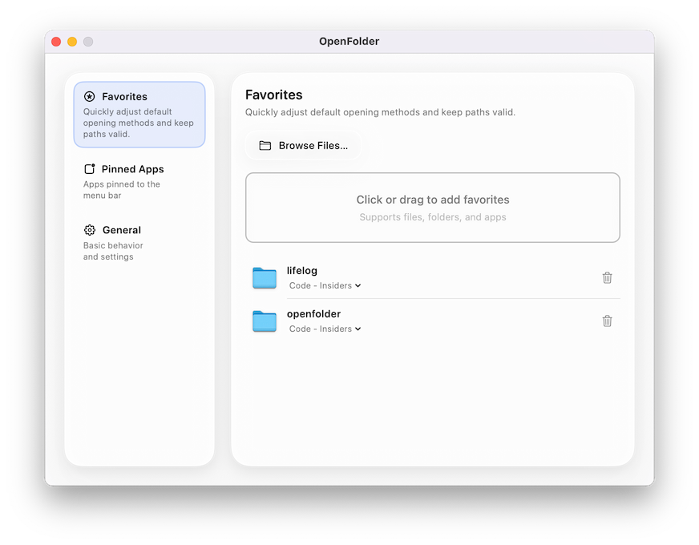

Two taps to open your favorite files.
OpenFolder keeps your most-used files and apps within reach. One menu bar icon. Zero friction. Available now on the App Store.

Your flow in three calm steps
Streamlined for muscle memory. No clutter, just the path from idea to action.
Add your favorites
Drag files, folders, or apps into the panel. OpenFolder keeps them ready with security-scoped bookmarks.
Pop open from the menu bar
One click on the status icon (or a keyboard shortcut) reveals your curated list in a glass panel.
Launch in two taps
Tap your favorite and go. OpenFolder remembers alternate apps and adapts to your workflow.
Answers before you buy
How does the one-time purchase work?
Purchase through the Mac App Store (or a direct license, when available) to unlock every current feature and future updates at no additional charge.
What is your refund policy?
App Store purchases follow Apple’s refund guidelines. Reach out through Report a Problem within 14 days. Direct licenses include a 14-day money-back guarantee—just email us.
What macOS versions are supported?
OpenFolder supports macOS Ventura (13.0) and newer, optimized for Apple silicon and Intel machines alike.
How can I get support or share feedback?
For support, please use the App Store Report a Problem flow or consult our documentation for help and release notes.
Get OpenFolder on the App Store.
Purchase once to unlock every update and feature we ship. No subscriptions. No nags.